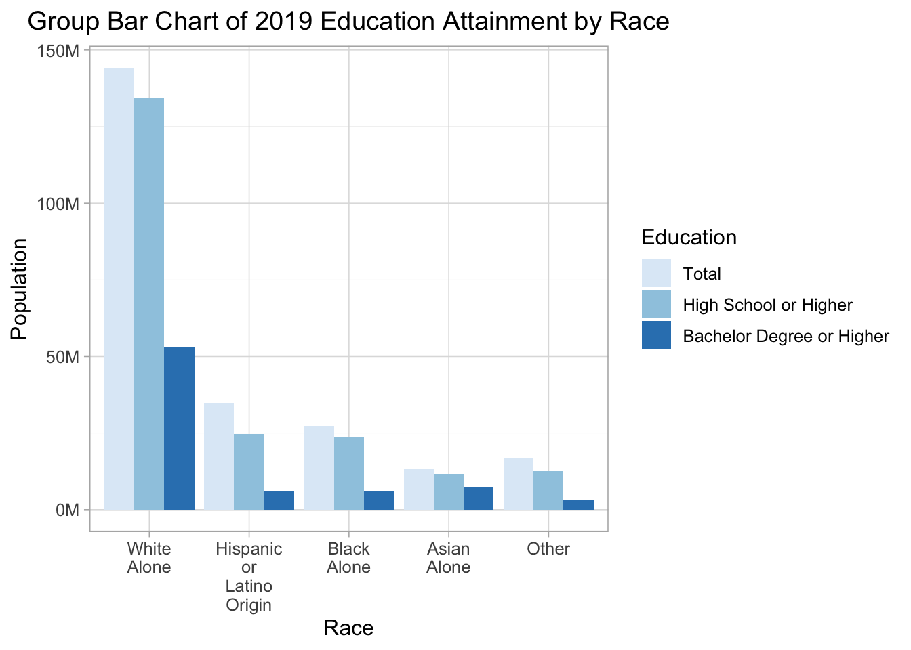
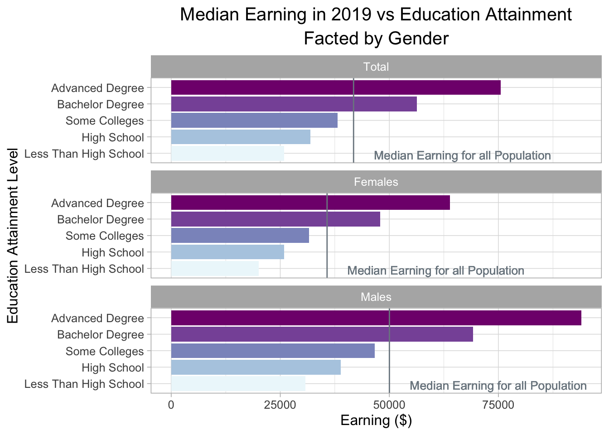

Chapter 5 Results
In this section, we will look at the data on the different levels of education attainment by gender, race, states and possible influence of education attainment on people’s earning and women’s marriage and fertility status in 2019 in the United States.
5.1 Education Attainment and Gender in 2019
We first focus on the level of education attainment and how it differs by gender in 2019. We plot a mosaic plot to show the relation between these two variables. Notice that since the variable Education has five levels and long names, it’s hard to display them appropriately and clearly in the label of mosaic plot. Therefore, we abbreviate the variable names by converting “Less than High School” to “<HS”, “High School Graduate” to “HSG”, “Some College or Associate Degree” to “SC”, “Bachelor Degree” to “BD”,“Advanced Degree” to “AD”.

From the mosaic plot, we can first observe that over the United States, people have high school graduate degree and some college or associate degree occupy the two largest proportions of the whole population and people who do not go to high school or obtain advanced degree, namely graduate degree or professional degree, occupy the two smallest proportion. Moreover, if we explore more on the relationship between gender and Education, we can observe that females generally obtain higher level of education than males since in the group of less than higher school and high school, female occupy a smaller proportion than male, while in the group of some college or associate degree, bachelor’s degree, or advanced degree, female occupy a larger proportion than male. However, if we look at the whole population, approximately more that 85% percents of the population have graduated from high school, which is a relatively high rate of high school graduate.
5.2 Different Levels of Education Attainment by Race
Now we look at the different levels of education attainment by race in the United States. Different from the previous plot, in this plot, the levels of education attainment are “Total”, “Higher School or Higher”, and “Bachelor Degree or Higher”, represent the total population, people have high school or higher degree, and people with bachelor or higher degree respectively.

From the above grouped bar chart, we can observe that for White people, who occupy the largest population in the United States, generally have higher level of education attainment than other races since the height of the bar representing the population of white people who have high school graduate or higher degree is closed to the bar representing the total white population. Moreover, Hispanic or Latino people have relative lower high school or higher graduation rate that other races, since the bars representing total population and population for people who obtain higher school graduate or higher degree have the largest gap among all group bars.
Notice that even though the group Other has a larger total population than the group Asian Alone, we plot the bar for Asian Alone first because the group Other is an aggregation of races including native Hawaiian and American Indian and so on, and each race itself has a smaller population than Asian American. Moreover, if we look at the group of Asian American alone, we can notice that the heights of bars representing total population and two levels of educational attainment are pretty closed, which reveals that Asian American has a relatively high rate of people obtain high school graduate or higher degree or even bachelor or higher degree.
5.3 Different Levels of Education Attainment by Race and Gender Together
In this section, we look at how levels of education attainment vary by gender for each race by plotting a horizontal stacked bar chart faceted by 2 educational levels, namely higher school graduate or higher and bachelor’s degree or higher.

One interesting finding from the above horizontal stacked bar chart is that for both facets, more than 50% of the population who obtain high school or higher degrees or bachelor or higher degrees are females. This slightly unbalanced proportion of education attainment within gender becomes more trivial when we focus on the plot of Bachelor Degree or Higher alone, or when we focus on black people alone. Clearly, the proportion of females among all population who obtain high school or higher degree is larger than the proportion of males, and this higher proportion keep increasing when it goes to the group of people with bachelor or higher degrees.
Moreover, among all races, black females clearly have the highest proportion compared to black males among all black people who obtain higher school or higher degrees or bachelor or higher degrees. Besides, the two proportional breakdowns of gender for people who have degrees of high school or higher or degrees of bachelor or higher remain unchanged for white people and Asian American.
5.4 Median Earning for each Level of Education Attainment and Gender
After exploring the proportional break down of education attainment by gender and race, we now focus on the possible influences of different levels of education attainment. In this section, we use bar chart faceted by gender to show how the median earning differs in population with different education attainments and how these differences appear in genders.

Clearly, we can observe from the plot that people’s earnings increase as they obtain higher degrees of education. Moreover, we can find that for all genders and the total population, median earning for people who obtain bachelor’s degrees or higher is higher than the overall median earning for all population. If we explore more on the lengths of the bars, we can observe that there is a huge increase in earnings for people obtaining bachelor’s degrees compared to the ones attending some colleges. The earnings for people with advanced degrees increase even more. This finding reveals the positive influence of higher education on people’s earnings and the high rate of return of higher education investment regarding to future earning.
If we look closer to genders, median earnings for females are lower than males as well as the total population regardless of education attainment levels. Males with advanced degrees, namely graduate or professional degree, have the highest median earnings and females with education attainment that is less than high school earn at least among all groups.
5.5 Education Attainment and Women’s Marital and Fertility Status
In last section, we notice that though high education attainment largely increases people’s earnings, the earnings among males and females are unequal for all levels of education attainment. To explore more on influence of education attainment on women’s life, we use a new data set with information on marriage status for women who give birth or not in 2019 in different education levels. Then, we plot a horizontal stacked bar chart to visualize the distribution of women with different marriage statuses, fertility statuses, and education levels.

Clearly, women who finished their high schools or obtained some college degrees take up the largest proportion of the whole women population, so they still occupy the largest proportion of women who gave birth or not. Moreover, the proportional breakdown of education attainment for women giving birth of not in 2019 remained unchanged for married women. However, the proportion of women who obtained some college degree or higher is larger for unmarried women who did not give births than who gave births in 2019.
One interesting finding is that for women who gave birth to babies in 2019, the proportional breakdown of education attainment was different for women who were married or not. More than 50% of unmarried women who gave birth to babies in 2019 status had a high school graduate degree or lower. However, approximately 75% of married women who gave birth to babies in 2019 had some college degree or higher. From this, we can observe some relationship between education attainment and the unmarried birth and women’s choices of marital status while giving birth.
5.6 Education Attainment and Median Earning by States
In this section, we conduct a linked micromap to see how education attainment and median earning differ in states in the United states in 2019 and explore the potential relationship among education attainment, median earning, and states. To visualize the data, we plot a linked micromap, including a Cleveland dot plot for bachelor’s degree or higher rate for each state, a Cleveland dot plot for the median earning for the total population in each state, and a map indicating the state corresponding the dot in the cleveland dot plot. Notice that both cleveland dot plot are sorted by the rate of bachelor’s degree or higher for each state. Even though Washington D.C. is not a state in the United States, it is an important factor to be considered. Therefore, we put it in the plot as well.

## [1] "micromapST Ends"From the plot, it is clear to notice that Washington DC has the highest bachelor’s degree or higher education attainment rate and also the highest median earnings. It is reasonable because it is the capital city of the United States with fewer population compared to other states. Therefore, we regard it as an outlier. Looking at the micromap on the left side of the plot, we can see that the states with greater higher education attainment rates than the medium are generally locally on East as well as West coast and on the Northern part in the United States. The states with relatively low higher education rates are mostly located on the Central and Southern part in the country.
In the plot, there is no a significant positive linear relationship between higher education attainment rate and median earning for each state. This is reasonable because the medium earning of a state is affected by multiple factors, including policy, geographic location, resources, and so on. However, we can still observe a slight trend of a higher median earning with a higher rate of population with bachelor degrees or higher for states.
There are two states, Alaska and Montana, which worth further research.
Alaska has a relatively low rate of population with bachelor degrees or higher compared to the medium. However, it has a higher median earning, close with $50,000, compared to states with similar or even greater higher education attainment rates. The contrast might due to Alaska’s rich mineral resources, developed tourism, and relatively small size of population.
On the contrast, Montana has a great higher education attainment rates but low median earning, less than $40,000. It median earning is lower than the ones for most other states. The reduction of natural resources, closure of miner, and late adoption of technology are some possible reasons lying behind it.